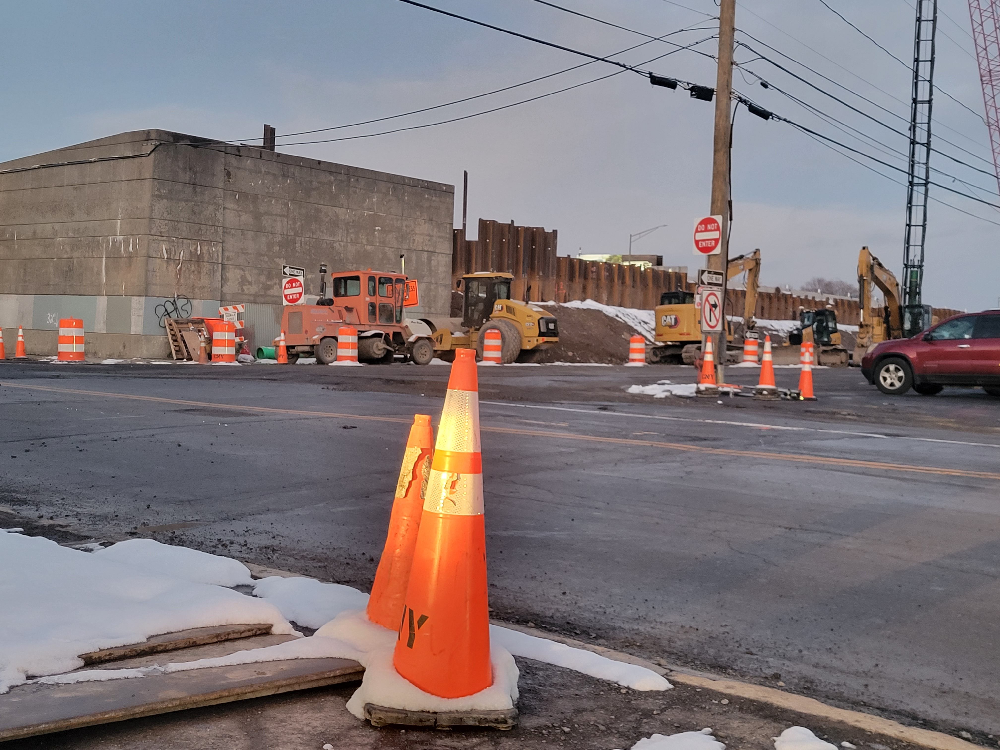

Traffic cones are lined up near an intersection in Syracuse, NY, Dec 3rd, 2024. Charlene Nomeny
Driving along in Central New York, it’s easy to see the roads are in poor shape.
“I've replaced the whole front end of my car after six months of driving on Syracuse roads and now I have to do it all over again,” Christine Gaytor said, one of millions of New Yorkers who drive on the sixth worst roads in the country, according to the latest Consumer Affairs report. And it's five times worse in urban areas.
According to Syracuse Metropolitan Transportation Council data, over 18% of the city's nearly 400 miles of road are rated poor or very poor, meaning that they had a score of five or below out of 10 based on the appearance of problems like cracks or bumps on the road. Many residents feel it’s worse than the data suggests.
“I can’t even drive on the highway. The highways are so bad here. The potholes, the bumps, it’s crazy,” Gaytor said.
There are many reasons the roads are in this state. The age of the city’s infrastructure, the number of people who commute to the city, and the cold weather all contribute to the road conditions according to Corey Driscoll Dunham, Chief Operations Officer of the Department of Public Works.
As the weather gets colder, the streets do more than ice over. The freezing and thawing of the roads can lead to cracks, which are made worse because the roads are already old.
But even more than that, there’s a lot of construction going on.
New housing and businesses are going up in anticipation of Micron’s arrival, while old infrastructure like the water lines are being updated.
“And so they're digging into the road. And every time you dig into the road. The clock starts ticking in terms of the quality that's degrading,” Dunham said.
Not only are new structures being built, but old ones are being torn down. One major project is the demolition and reconstruction of Interstate 81, which was built in the ‘50s and ‘60s. Parts of I-81 no longer meet engineering standards, are deteriorating, or have high accident rates according to the NY Department of Transportation.
Construction vehicles and traffic cones line the side a road in Syracuse, NY, Dec 3rd, 2024. Charlene Nomeny
Emmanuel Carter, an urban planning expert and Associate Professor at SUNY College of Environmental Science and Forestry said this project is inherently disruptive.
“Yeah, everybody wants the viaduct to come down,” Carter said. “So do I. But not everybody is going to be happy for a little while while they actually do it.”
The Department of Transportation announces a detour in town almost daily. Those detours, lane closures, and heavy construction vehicles put extra strain on roads not equipped for that kind of traffic, Carter said.
All these potholes, cracks, and bumps caused by construction and aging have taken a toll on drivers. Gaytor said she’s forced to plan her drives around the quality of the road.
“It's hard to find streets to drive down that aren't going to damage your vehicle if you're not going 10 mph,” Gaytor said.
But the city is doing something about it.
According to Professor Carter, as the population (i.e. tax base), and federal funding have increased, the city has been able to improve roads better than in the past, repairing 20 miles of road in four years.
But this improvement hasn’t been linear. Although the number of poor roads has gone down steadily since 2020, the miles aren’t as consistent. In 2022, there were 70 miles of roads with a rating below 5. The next year, there were 72.
Dunham claims outside builders could be bringing down road quality.
“You know, ideally everybody does exactly what we need them to do,” Dunham said. “The road is restored and their work does not further degrade the quality of the road, but unfortunately that’s not the case that we’re seeing.”
The city is looking to to introduce legislation that would set clearer standards for contractors by the end of this year, Dunham said. The legislation would also set consequences for not meeting those standards.
The slight decrease in road quality could also be due to timing, SMTC official Andrew Frasier said. The city repaves a quarter of the roads every four years with a slurry sealant. Sometimes, the SMTC’s schedule doesn't align with the city.
“You know… we might have captured some of it before the slurry crews are out there and then the next year you capture it, after that..” Frasier said.
Regardless, Syracuse is constantly undergoing some form of restoration. Professor Carter likens the city to a living creature.
“It is an organism constantly in motion, like our bodies. We’re getting rid of old cells and bringing in new cells all the time,” Carter said.
Essentially, the work is never finished. But if the numbers are anything to go by, something is getting done.